Installation
Install the development version of IChop from GitHub:
devtools::install_github("yuchenxiao95/IChop")You also need Julia (≥ 1.9), which you can download from https://julialang.org/downloads/. Then connect R to Julia; the first time, also install the Julia packages the package uses:
library(IChop)
setup_julia()
install_julia_packages() # first time onlyThe same methods are available as a Julia package, IChop.jl, if you would rather work in Julia directly.
Overview
IChop addresses the computational barrier of solving \ell_0-penalized regression in linear models where the number of predictors p is large, in the hundreds or even the thousands, yet smaller than the number of observations n. Finding the optimal solution of \ell_0-penalized regression has been treated as a combinatorial problem that requires discrete optimization and is NP-hard. This package builds on a connection with Hopfield networks, which are used for associative memory retrieval (Xiao and Walker, 2026). It makes generalized information criteria (GIC; Kim, Kwon and Choi, 2012) for variable selection, which are equivalent to \ell_0-penalized regression, computationally feasible. The rationale is that there remains strong interest in GIC, whose statistical properties are superior to those of \ell_1-based regularization.
The Hopfield network
A Hopfield network (Hopfield, 1982) is a model of associative memory with p neurons, each connected to every other neuron by undirected edges with no self-connections. The state z \in \lbrace 1, -1 \rbrace^p evolves through a symmetric weight matrix W, built from a stored pattern z_s by Hebb’s law, W = z_s^\top z_s - I, so that W_{ij} = W_{ji} = z_i z_j and W_{ii} = 0. The network updates one neuron at a time,
z_i(t+1) = \mathrm{sgn}\big(H_i(t)\big), \qquad H_i(t) = \sum_{j \ne i} w_{ij} z_j(t),
with \mathrm{sgn}(H) = 1 if H \ge 0 and -1 otherwise, cycling through i = 1, \dots, p until z is stable. Each update can only lower the energy
E(z) = -z^\top W z ,
and E is bounded below, so the network always converges to a locally stable state (Bruck, 1990).
Connection with AIC
Write the linear model with inclusion indicators z_j \in \lbrace 0, 1 \rbrace:
y_i = \sum_{j=1}^{p} x_{ij} z_j \beta_j + \sigma \varepsilon_i , \qquad\text{or}\qquad y = X D_t^p \beta + \sigma \varepsilon ,
where D_t^p = \mathrm{diag}(z_1, \dots, z_p) has t nonzero entries, so X_t = X D_t^p holds the true predictors. For a candidate model X_d = X D_d^p with hat matrix H_d = X_d (X_d^\top X_d)^{-1} X_d^\top, AIC is an asymptotically unbiased estimate of
\frac{1}{n} \beta^\top X_t^\top H_d X_t \beta = \frac{1}{n} \langle X_t \beta, X_t \beta \rangle_{H_d} = \frac{1}{n} \langle X_t \beta, \widehat{X_t \beta} \rangle ,
where \widehat{X_t \beta} = H_d X_t \beta. Maximizing it minimizes the expected out-of-sample error and finds the optimal orthogonal projection onto the span of X_t \beta, reached when X_d = X_t. This quantity plays the role of the energy term in a Hopfield network and allows the indicators to be updated one at a time:
z_j(t+1) = \mathbf{1}\left\lbrace \frac{1}{n} \beta^\top X_t^\top H_{d+1} X_t \beta > \frac{1}{n} \beta^\top X_t^\top H_d X_t \beta \right\rbrace ,
where H_{d+1} includes x_j. Under these updates the energy term is nondecreasing and bounded above by \frac{1}{n} \beta^\top X_t^\top X_t \beta. The true signal is unknown, but it is linked to the data through
\frac{1}{n} \beta^\top X^\top H_d X \beta = \mathbb{E}\left[ \frac{1}{n} y^\top H_d y \right] - d \frac{\sigma^2}{n} \xrightarrow{p} \mathbb{E}\left[ \beta^\top X^\top H_d X \beta \right] .
Replacing the unknown signal with the data gives the update rule for AIC,
z_j(t+1) = \mathbf{1}\left\lbrace \frac{1}{n} y^\top H_{d+1} y - 2(d+1) \frac{\sigma^2}{n} > \frac{1}{n} y^\top H_d y - 2d \frac{\sigma^2}{n} \right\rbrace ,
and, for any GIC with penalty p(n, d),
z_j(t+1) = \mathbf{1}\left\lbrace \frac{1}{n} y^\top H_{d+1} y - p(n, d+1) > \frac{1}{n} y^\top H_d y - p(n, d) \right\rbrace .
This establishes a connection between the expected out-of-sample MSE and the energy function of the Hopfield network for associative memory, where the stable local minima in the energy function of the Hopfield network correspond to optimal sparse solutions.
AIC is minimax-rate optimal but inconsistent when a true model exists; criteria with stronger penalties achieve consistency. Table 1 lists the criteria in the package and their penalties p(n, d), where d is the number of selected variables and p the number of candidate predictors:
| Name | p(n, d) | Reference |
|---|---|---|
| AIC | 2d \frac{\sigma^2}{n} | Akaike (1974) |
| BIC | d \frac{\sigma^2}{n} \log n | Schwarz (1978) |
| GIC2 | d \frac{\sigma^2}{n} p^{1/3} | Kim et al. (2012) |
| GIC3 | 2d \frac{\sigma^2}{n} \log p | Kim et al. (2012) |
| GIC4 | 2d \frac{\sigma^2}{n} (\log p + \log\log p) | Kim et al. (2012) |
| GIC5 | d \frac{\sigma^2}{n} \log\log n \log p | Kim et al. (2012) |
| GIC6 | d \frac{\sigma^2}{n} \log n \log p | Kim et al. (2012) |
| CAIC | d \frac{\sigma^2}{n} (\log n + 1) | Bozdogan (1987) |
| CAICF | d \frac{\sigma^2}{n} (\log n + 1) + \frac{\sigma^2}{n} \log\det(X_d^\top X_d / \sigma^2) | Bozdogan (1987) |
| SIC | d \frac{\sigma^2}{n} \sqrt{n} | Shao (1997) |
| AICc | (d + 1) \frac{\sigma^2}{n - d - 2} | Hurvich and Tsai (1989) |
| EBIC | d \frac{\sigma^2}{n} \left(\log n + \gamma \log \binom{p}{d}\right), \gamma = 0.6 by default | Chen and Chen (2008) |
Examples
The examples below compare three IC on the same data. In increasing order of penalty per variable, they are AIC (c_n = 2), BIC (\log n) and GIC6 (\log n \log p), where p is the number of candidate predictors. Each example also runs the Boltzmann machine with GIC6, which uses probabilistic updates instead of the deterministic updates of a standard Hopfield network. The Boltzmann machine accepts a move that lowers the criterion by \Delta with probability 1/(1 + e^{\Delta/T}), where the temperature T is a tuning parameter. The Boltzmann machine can leave a local optimum and provide some uncertainty quantification. Every example uses the default T = 0.1.
For reference, the examples also fit the lasso and the adaptive lasso with the glmnet package (Friedman, Hastie and Tibshirani, 2010), using cv.glmnet() with 10-fold cross-validation and lambda.1se (glmnet’s default), and family = "gaussian", "mgaussian", "poisson" or "binomial" to match the response, as in glmnet’s own articles. The lasso and adaptive lasso are not fitted in the multinomial and Cox examples, because their cross-validation takes too long there.
Each table reports the size, false positives and false negatives of the selected model, and the wall-clock time of each method in seconds. Three figures follow each table: the criterion along the search, the model size along the search, with the number of predictors the lasso and the adaptive lasso select at the cross-validated \lambda (lambda.1se) as horizontal lines, and the same run times as the table.
All examples use the same setting. The design matrix X has n = 2000 observations of p = 500 independent standard normal predictors, so the predictor covariance is \Sigma = I, and only a few predictors affect the response. Every search runs twice, on the first 1000 observations and on all 2000.
The examples below highlight some well-known statistical properties of these criteria:
- In linear regression, AIC is minimax-rate optimal and BIC is consistent. In the linear model figure, AIC (blue line) attains the minimax optimality at the expense of many false positives.
- Criteria in the GIC family achieve consistency at different rates. In the linear model figure, GIC6 (green line) reaches the true model within two passes of the search, and achieves consistency at a faster rate than BIC (orange line).
- Consistency is an asymptotic result. Doubling the sample size (dotted lines) improves the rate of consistency.
Linear model
Here the response is Y = X\beta + \varepsilon with \varepsilon \sim N(0, \sigma^2 I). Five randomly chosen coefficients equal 2 and the rest are 0, and \sigma^2 gives a signal-to-noise ratio of \beta^\top\Sigma\beta/\sigma^2 = 0.71. Every search starts from the full model:
set_seeds(1)
n <- 2000; p <- 500
X <- matrix(rnorm(n * p), n, p)
true_cols <- sort(sample(p, 5))
beta <- numeric(p); beta[true_cols] <- 2
Y <- LP_to_Y(X, beta, family = "Normal", std = sqrt(sum(beta^2) / 0.71))
fits <- compare_criteria(X, Y, 1:p, k = p, Nsim = 5)
selection_table(fits, true_cols)
#> size false_pos false_neg seconds
#> n1000 AIC 152 147 0 0.58
#> n1000 BIC 8 3 0 0.56
#> n1000 GIC6 5 0 0 0.50
#> n1000 Boltzmann 5 0 0 0.36
#> n1000 Lasso 5 0 0 0.91
#> n1000 AdaLasso 5 0 0 1.64
#> n2000 AIC 116 111 0 0.77
#> n2000 BIC 9 4 0 0.72
#> n2000 GIC6 5 0 0 0.66
#> n2000 Boltzmann 5 0 0 0.66
#> n2000 Lasso 5 0 0 0.99
#> n2000 AdaLasso 5 0 0 2.67
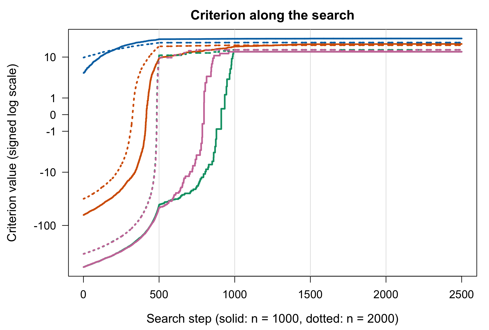
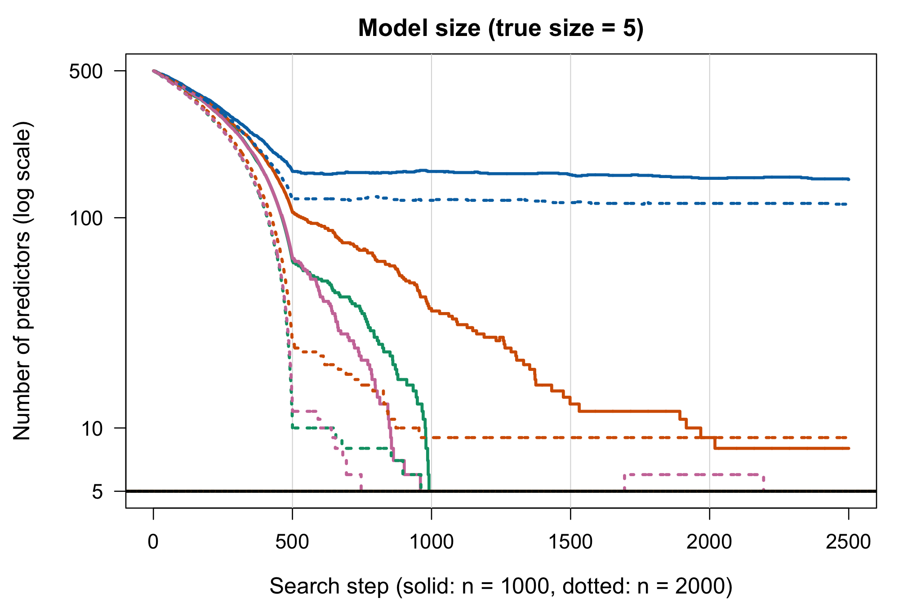

Multivariate normal
Five responses, each with its own 5 predictors and coefficients from 10 down to 0.1. Pass the n \times 5 response matrix as Y:
m <- 5
B <- matrix(0, p, m)
true_by_response <- vector("list", m)
for (i in 1:m) {
cols <- sort(sample(p, 5))
true_by_response[[i]] <- cols
B[cols, i] <- seq(10, 0.1, length.out = 5)
}
Y_multi <- LP_to_Y(X, B, family = "MultivariateNormal", cov_matrix = diag(m))
true_union <- sort(unique(unlist(true_by_response)))
fits <- compare_criteria(X, Y_multi, 1:p, k = p, Nsim = 5,
lasso_family = "mgaussian")
selection_table(fits, true_union)
#> size false_pos false_neg seconds
#> n1000 AIC 102 80 2 0.52
#> n1000 BIC 20 0 4 0.45
#> n1000 GIC6 19 0 5 0.40
#> n1000 Boltzmann 82 62 4 0.50
#> n1000 Lasso 32 10 2 2.35
#> n1000 AdaLasso 19 0 5 5.32
#> n2000 AIC 69 45 0 0.61
#> n2000 BIC 20 0 4 0.80
#> n2000 GIC6 19 0 5 0.63
#> n2000 Boltzmann 132 111 3 1.06
#> n2000 Lasso 35 11 0 3.60
#> n2000 AdaLasso 19 0 5 8.51
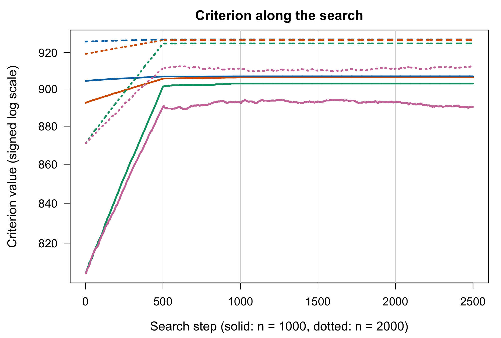
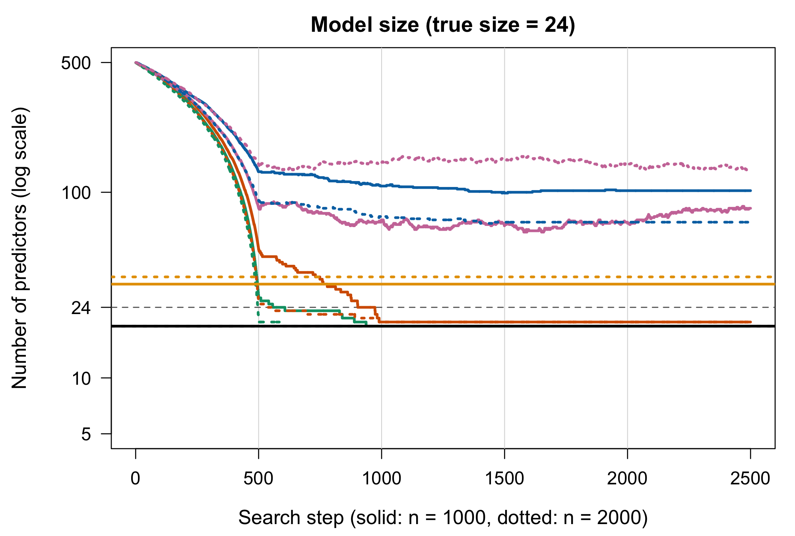

Generalized linear models
For a non-Gaussian response, map it to the linear-predictor scale with Y_to_LP(), select with GICSelection(), and then fit the selected model with Beta_estimate(). The GLM examples reuse the design matrix X from above (n = 2000, p = 500), with 5 true predictors, and start each search from the first 10 columns.
set_seeds(2)
true_cols <- c(3, 17, 42, 88, 150)
beta <- numeric(p); beta[true_cols] <- c(1, -1, 0.8, -0.8, 0.6)
# `y` is the response, `lasso_y` and `lasso_family` its form for glmnet (NULL
# to skip the lasso), and `...` the family arguments for Y_to_LP(); `T` is the
# Boltzmann temperature
compare_glm <- function(y, lasso_y, lasso_family, ..., T = 0.1)
compare_criteria(X, Y_to_LP(y, ...), 1:10, k = 50, Nsim = 3,
lasso_y = lasso_y, lasso_family = lasso_family, T = T)Poisson regression
y_pois <- LP_to_Y(X, beta, family = "Poisson")
fits <- compare_glm(y_pois, y_pois, "poisson", family = "Poisson")
selection_table(fits, true_cols)
#> size false_pos false_neg seconds
#> n1000 AIC 48 43 0 0.39
#> n1000 BIC 9 4 0 0.03
#> n1000 GIC6 5 0 0 0.02
#> n1000 Boltzmann 49 46 2 0.03
#> n1000 Lasso 16 11 0 2.04
#> n1000 AdaLasso 5 0 0 2.14
#> n2000 AIC 49 45 1 0.12
#> n2000 BIC 10 5 0 0.05
#> n2000 GIC6 5 0 0 0.05
#> n2000 Boltzmann 49 47 3 0.12
#> n2000 Lasso 7 2 0 1.46
#> n2000 AdaLasso 5 0 0 4.11
# Coefficients of the GIC6 model for n = 2000, intercept first
round(Beta_estimate(X[, last_model(fits$n2000$GIC6)], y_pois, family = "Poisson"), 2)
#> [1] -0.03 1.00 -1.01 0.79 -0.80 0.62
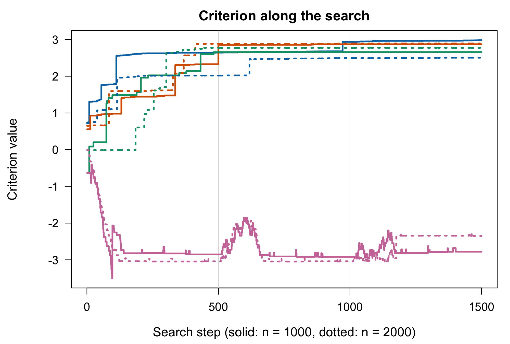
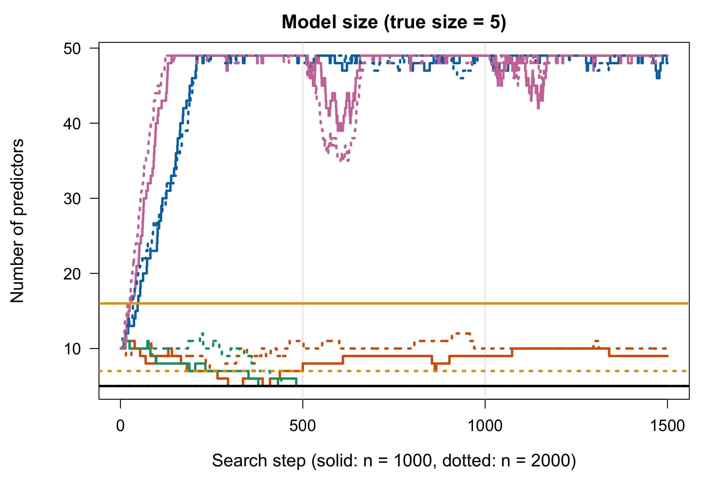

Binomial counts (10 trials)
y_binom <- LP_to_Y(X, beta, family = "Binomial", n_trials = 10)
fits <- compare_glm(y_binom, cbind(10 - y_binom, y_binom), "binomial",
family = "Binomial", n_trials = 10)
selection_table(fits, true_cols)
#> size false_pos false_neg seconds
#> n1000 AIC 49 44 0 0.20
#> n1000 BIC 15 10 0 0.09
#> n1000 GIC6 5 0 0 0.03
#> n1000 Boltzmann 5 0 0 0.04
#> n1000 Lasso 5 0 0 1.48
#> n1000 AdaLasso 5 0 0 2.93
#> n2000 AIC 49 46 2 0.08
#> n2000 BIC 8 3 0 0.06
#> n2000 GIC6 5 0 0 0.12
#> n2000 Boltzmann 5 0 0 0.05
#> n2000 Lasso 5 0 0 1.77
#> n2000 AdaLasso 5 0 0 5.58
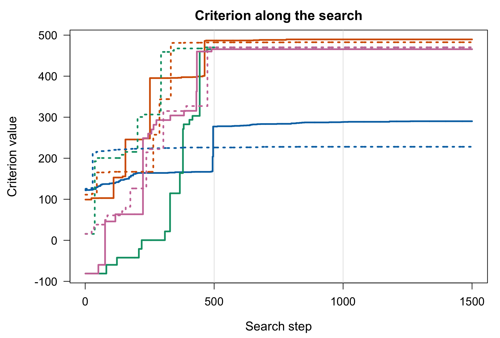
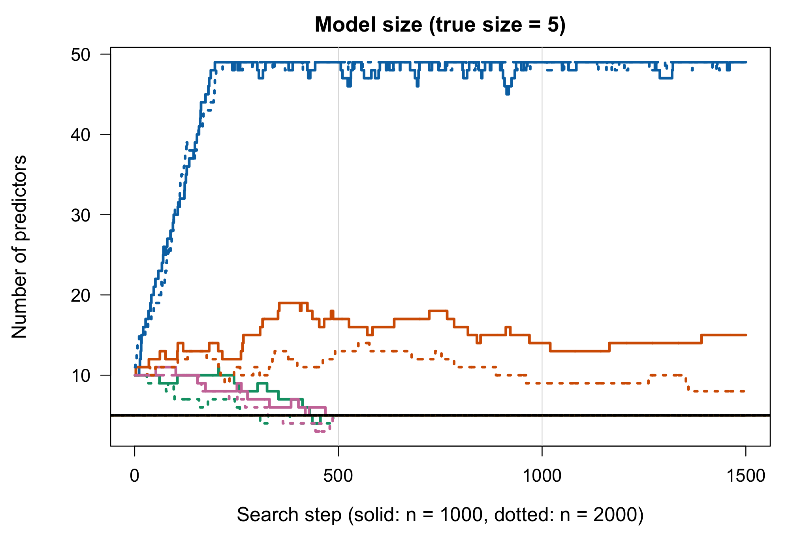

Multinomial (three categories)
The coefficients form a p \times 2 matrix, and category 3 is the baseline:
B_mn <- matrix(0, p, 2)
B_mn[true_cols, 1] <- 1.5
B_mn[true_cols, 2] <- c(-1.5, 1.5, -1.5, 1.5, -1.5)
y_mn <- LP_to_Y(X, B_mn, family = "Multinomial", n_categories = 3)
fits <- compare_glm(y_mn, NULL, NULL, family = "Multinomial", n_categories = 3)
selection_table(fits, true_cols)
#> size false_pos false_neg seconds
#> n1000 AIC 49 45 1 0.33
#> n1000 BIC 6 1 0 0.03
#> n1000 GIC6 5 0 0 0.03
#> n1000 Boltzmann 5 0 0 0.03
#> n2000 AIC 49 46 2 0.14
#> n2000 BIC 7 2 0 0.05
#> n2000 GIC6 5 0 0 0.05
#> n2000 Boltzmann 14 9 0 0.05
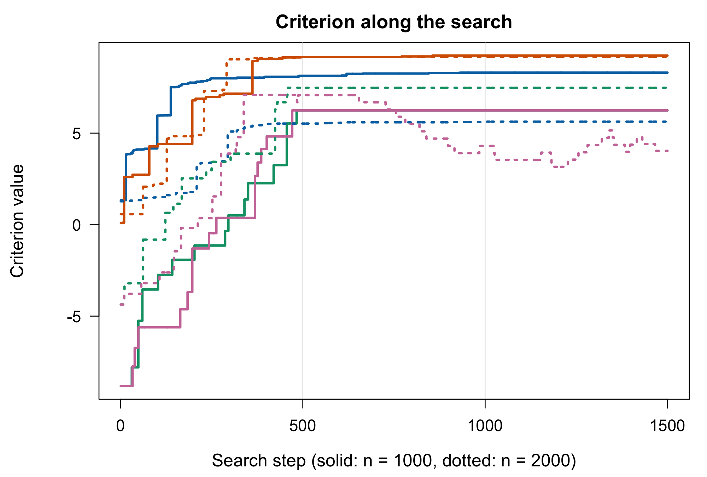
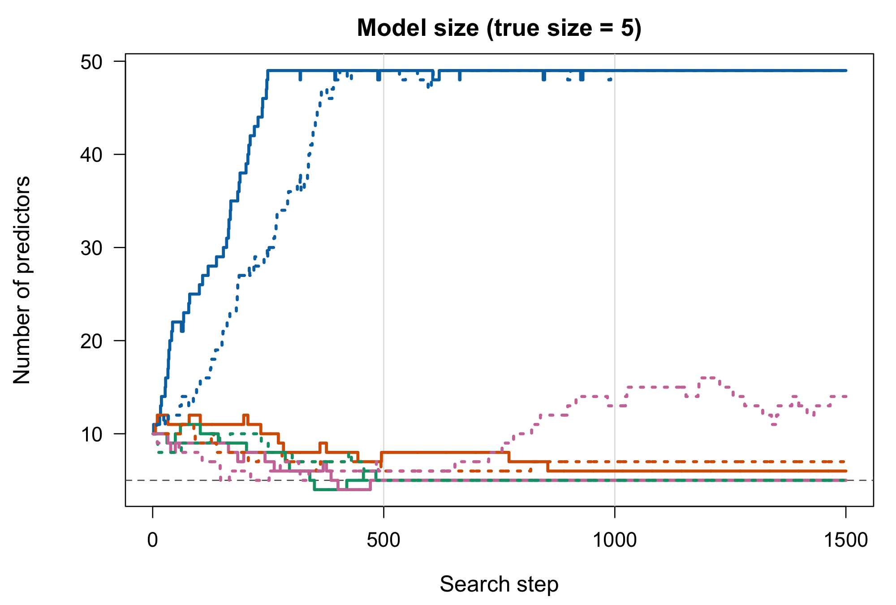

Cox proportional hazards
The survival times follow a Cox model, h(t \mid x) = h_0(t)\, e^{x^\top\beta}, with the same \beta, an exponential baseline hazard h_0(t) = 1 and independent exponential censoring at rate 0.3, simulated by LP_to_Y(family = "Cox") (Bender, Augustin and Blettner, 2005). For the searches, Y_to_LP() maps each (time, status) pair to the deviance residual of the null Cox model (Therneau, Grambsch and Fleming, 1990), which increases with the linear predictor. The selected model is then fitted with survival::coxph().
y_cox <- LP_to_Y(X, beta, family = "Cox", censor_rate = 0.3)
mean(y_cox[, "status"] == 0) # share of censored observations
#> [1] 0.3335
y_surv <- survival::Surv(y_cox[, "time"], y_cox[, "status"])
fits <- compare_glm(y_cox, NULL, NULL, family = "Cox")
selection_table(fits, true_cols)
#> size false_pos false_neg seconds
#> n1000 AIC 49 45 1 0.68
#> n1000 BIC 10 5 0 0.03
#> n1000 GIC6 5 0 0 0.02
#> n1000 Boltzmann 49 46 2 0.10
#> n2000 AIC 49 47 3 0.06
#> n2000 BIC 10 5 0 0.05
#> n2000 GIC6 5 0 0 0.13
#> n2000 Boltzmann 49 46 2 0.12
# Coefficients of the GIC6 model for n = 2000, from survival::coxph()
round(unname(coef(survival::coxph(y_surv ~ X[, last_model(fits$n2000$GIC6)]))), 2)
#> [1] 1.02 -1.00 0.78 -0.77 0.61
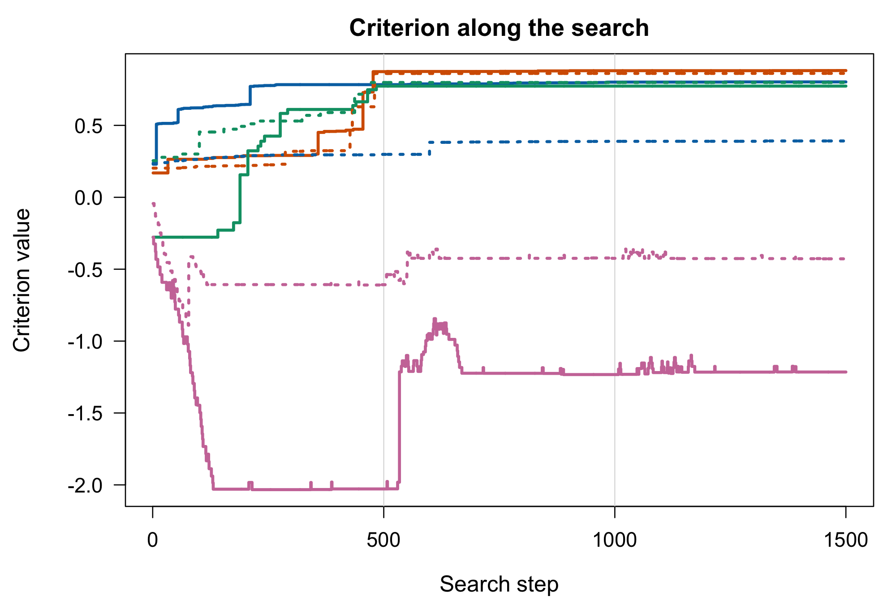
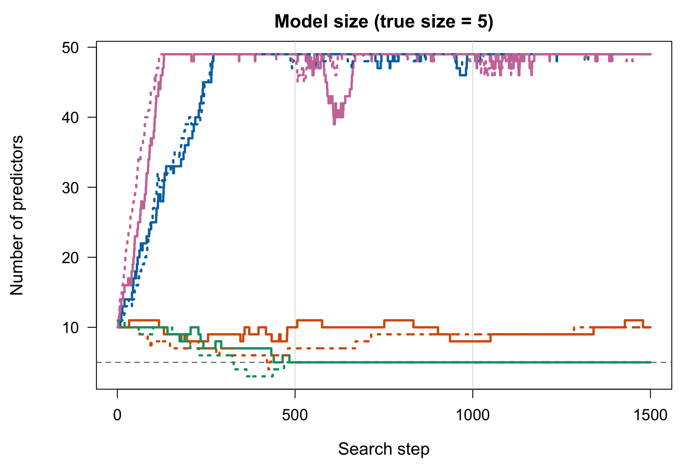

Performance
Claude Code identified and fixed two slowdowns in the original, human-written version of the package, which results in an 8–230× speedup of GICSelection() from R, with the same variables selected. The gain grows with the sample size: from 1.9 s to 0.23 s at n = 1000, p = 200, from 16 s to 0.52 s at n = 1000, p = 500, and from 101 s to 0.44 s at n = 5000, p = 500.
- The search rebuilt the n \times n hat matrix for every proposed move. Version 0.1.2 formed H = X_S (X_S^\top X_S)^{-1} X_S^\top to score each add or remove, at O(n^2 K) cost per move. Claude Code updated the search to compute every criterion from X^\top Y and (X_S^\top X_S)^{-1} and to score each move with a rank-one update, at O(nK + K^2) cost. See Appendix 1 of the package article for the details.
-
Calls from R did not use the fast search.
GICSelection()andGICSelectionBoltzmann()passed the criterion to Julia as a function, which arrived as an R-wrapped object that the search did not recognise, so it fell back to refitting every candidate model and calling back into R. Claude Code updated the R functions to pass the criterion by name.
References
Akaike, H. (1974). A new look at the statistical model identification. IEEE Transactions on Automatic Control, 19(6), 716–723. https://doi.org/10.1109/TAC.1974.1100705
Bender, R., Augustin, T. and Blettner, M. (2005). Generating survival times to simulate Cox proportional hazards models. Statistics in Medicine, 24(11), 1713–1723. https://doi.org/10.1002/sim.2059
Bozdogan, H. (1987). Model selection and Akaike’s information criterion (AIC): The general theory and its analytical extensions. Psychometrika, 52(3), 345–370. https://doi.org/10.1007/BF02294361
Bruck, J. (1990). On the convergence properties of the Hopfield model. Proceedings of the IEEE, 78(10), 1579–1585. https://doi.org/10.1109/5.58341
Chen, J. and Chen, Z. (2008). Extended Bayesian information criteria for model selection with large model spaces. Biometrika, 95(3), 759–771. https://doi.org/10.1093/biomet/asn034
Friedman, J., Hastie, T. and Tibshirani, R. (2010). Regularization paths for generalized linear models via coordinate descent. Journal of Statistical Software, 33(1), 1–22. https://doi.org/10.18637/jss.v033.i01
Hopfield, J. J. (1982). Neural networks and physical systems with emergent collective computational abilities. Proceedings of the National Academy of Sciences, 79(8), 2554–2558. https://doi.org/10.1073/pnas.79.8.2554
Hurvich, C. M. and Tsai, C.-L. (1989). Regression and time series model selection in small samples. Biometrika, 76(2), 297–307. https://doi.org/10.1093/biomet/76.2.297
Kim, Y., Kwon, S. and Choi, H. (2012). Consistent model selection criteria on high dimensions. Journal of Machine Learning Research, 13, 1037–1057. https://jmlr.org/papers/v13/kim12a.html
Schwarz, G. (1978). Estimating the dimension of a model. The Annals of Statistics, 6(2), 461–464. https://doi.org/10.1214/aos/1176344136
Shao, J. (1997). An asymptotic theory for linear model selection. Statistica Sinica, 7(2), 221–264. https://www3.stat.sinica.edu.tw/statistica/j7n2/j7n21/j7n21.htm
Therneau, T. M., Grambsch, P. M. and Fleming, T. R. (1990). Martingale-based residuals for survival models. Biometrika, 77(1), 147–160. https://doi.org/10.1093/biomet/77.1.147
Xiao, Y. and Walker, S. (2026). Fast variable selection under \ell_0 regularization in high-dimensions. Statistics and Computing, 36(3), 100. https://doi.org/10.1007/s11222-026-10853-5